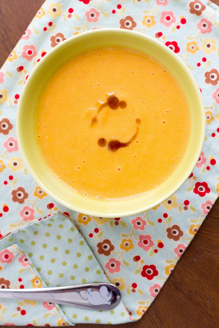

Kõrvitsapüreesupp
Koostisosa
Kogus
Puhastatud ja tükeldatud kõrvits
1kg
Köögiviljapuljong
1L
Suur sibul
1tk
Õli
1sl
Sulatatud juust/Merevaik
200g
Sool ja pipar
Koori ja tükelda kõrvits ning pane koos puljongiga potti
Kuumuta keemiseni
Haki sibul ning prae õlis kuldseks
Lisa sibul koos praadimisõliga potti
Keeda, kuni kõrvits on pehme, seejärel püreesta ühtlaseks
Lisa sulatatud juust ning püreesta uuesti
Lisa maitse järgi soola ja pipart

Retsepti allikas:
nami-nami.ee